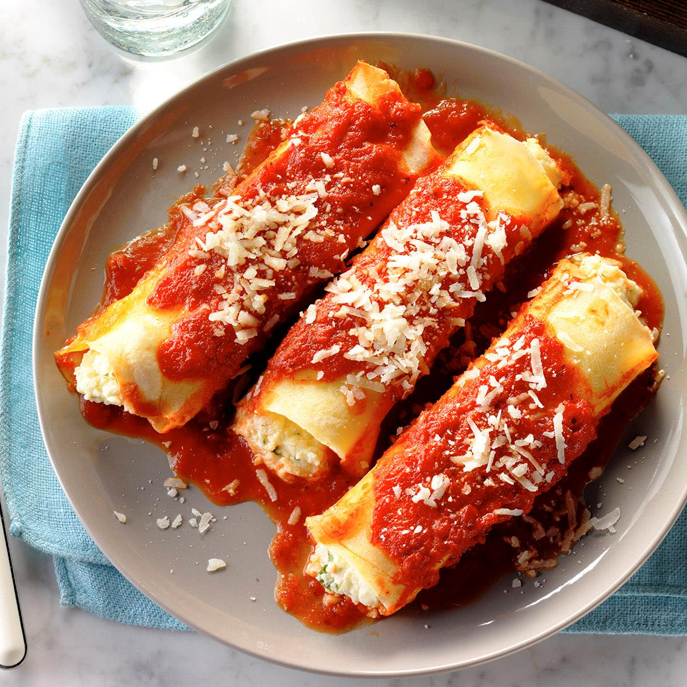

Manicotti

Description
This rich meat, spinach and cheese filled manicotti dish is covered with white and red sauces.
It's a bit of work but well worth the effort!
Ingredients
- 2 tablespoons olive oil
- ½ cup chopped onion
- 6 cloves garlic, finely chopped
- 1 pound ground beef
- salt to taste
- 1 (10 ounce) package frozen chopped spinach, thawed and drained
- 1 (12 ounce) package manicotti shells
- 2 cups ricotta cheese
- 2 eggs, beaten
- 3 cups spaghetti sauce, divided
- 2 tablespoons butter
- 2 tablespoons all-purpose flour
- 2 tablespoons chicken bouillon granules
- 2 cups half-and-half
- ¼ cup chopped fresh parsley
- 1 tablespoon chopped fresh basil
- ½ cup grated Parmesan cheese
Steps
- Heat oil in a large skillet over medium heat. Saute onions until translucent. Saute garlic for 1 minute and stir in ground beef. Cook until well browned and crumbled. Season with salt and set aside to cool.
- Cook spinach according to package directions. Meanwhile, bring a large pot of lightly salted water to a boil. Add manicotti shells and parboil for half of the time recommended on the package. Drain and cover with cool water to stop the cooking process and prevent the shells from cracking.
- To the ground beef mixture add the cooked spinach and ricotta cheese. When the mixture is cool, add the beaten eggs. Spread 1/4 cup spaghetti sauce in the bottom of a 9x13 inch baking dish. Gently drain the manicotti shells and carefully stuff each one with the meat and cheese mixture; place shells in prepared dish. Lightly cover the dish with plastic wrap or a clean, damp towel to prevent shells from cracking.
- Preheat oven to 350 degrees F (175 degrees C).
- Prepare the white sauce by melting the butter in a small saucepan over medium heat. Stir in flour and chicken bouillon. Increase heat to medium-high and cook, stirring constantly, until it begins to bubble. Stir in half and half and bring to a boil, stirring frequently. Cook for 1 minute, stirring constantly. Remove from heat and stir in parsley. Pour or ladle the sauce evenly over the stuffed shells.
- Stir the basil into the remaining spaghetti sauce. Carefully pour or ladle spaghetti sauce over the white sauce, trying to layer the sauces without mixing.
- Cover and bake for 40 minutes. Remove from oven, uncover and sprinkle with Parmesan cheese. Bake, uncovered, for 10 minutes more.